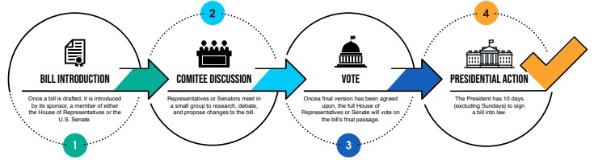

The Idea of The Bill
The process begins when a member of Congress has an idea for legislation. In the House of Representatives, the bill is literally dropped into a wooden box called "the hopper" located on the House floor. Any House member can introduce a bill by placing it there. In the Senate, the bill is introduced by handing it to a clerk or formally announcing it on the floor. The bill is then assigned a number
